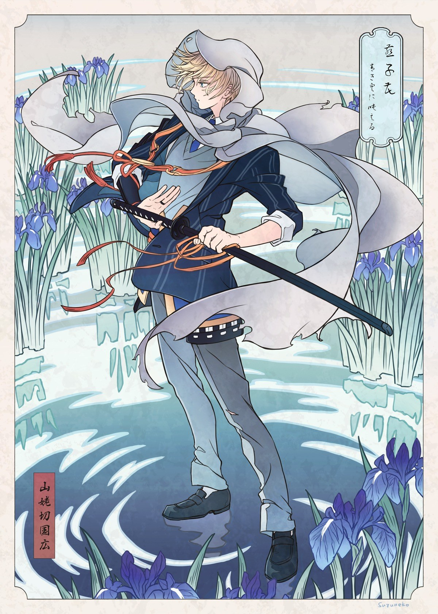

04 / Apparence
Physique
Une silhouette discrète, un manteau blanc et un regard bleu sous les mèches blondes.

Silhouette & apparence
Une présence
sans fracas.
- Âge
- 21 ans
- Taille
- 1,68 m
- Poids
- 59 kg
- Cheveux
- Blond clair aux reflets dorés, légèrement ébouriffés, avec des mèches tombant sur le front.
- Yeux
- Bleu clair, expressifs malgré un regard souvent rêveur.
- Constitution
- Élancée, muscles discrets développés par la course, l’endurance et le maniement du sabre.
- Tenue
- Vêtements bleu nuit, manteau blanc ample à capuche et ornements sobres. Sabre porté à la taille.
Ses traits fins et son attitude tranquille inspirent rarement la crainte au premier regard. Ses appuis stables, ses gestes maîtrisés et sa façon de se déplacer révèlent pourtant un entraînement rigoureux.
En mouvement
Le calme ne dure qu’un instant.
Le manteau blanc accentue visuellement la rapidité de ses gestes. Les bleus de sa tenue et la clarté de son regard contrastent avec les paysages sombres de son histoire.
Son manteau blanc aux pans souples accompagne chaque déplacement, tandis que les pièces plus sombres de sa tenue soulignent sa silhouette légère. Même au repos, il conserve souvent cette posture légèrement prête à repartir.